DTC P2195 Oxygen (A/F) Sensor Signal Stuck Lean (Bank 1 Sensor 1) |
DTC P2196 Oxygen (A/F) Sensor Signal Stuck Rich (Bank 1 Sensor 1) |
DTC P2197 Oxygen (A/F) Sensor Signal Stuck Lean (Bank 2 Sensor 1) |
DTC P2198 Oxygen (A/F) Sensor Signal Stuck Rich (Bank 2 Sensor 1) |

| DTC Code | DTC Detection Condition | Trouble Area |
| P2195 P2197 | Conditions (a) and (b) continue for 5 seconds or more (2 trip detection logic): (a) The A/F sensor voltage is higher than 3.8 V for 5 seconds. (b) The Heated Oxygen (HO2) sensor voltage is 0.21 V or higher. |
|
| While the fuel-cut operation is performed (during vehicle deceleration), the A/F sensor current is 3.6 mA or higher for 3 seconds (2 trip detection logic). |
| |
| P2196 P2198 | Conditions (a) and (b) continue for 5 seconds or more (2 trip detection logic): (a) The A/F sensor voltage is below 2.8 V for 5 seconds. (b) The HO2 sensor voltage is below 0.59 V. |
|
| While the fuel-cut operation is performed (during vehicle deceleration), the A/F sensor current is below 1.4 mA for 3 seconds (2 trip detection logic). |
|
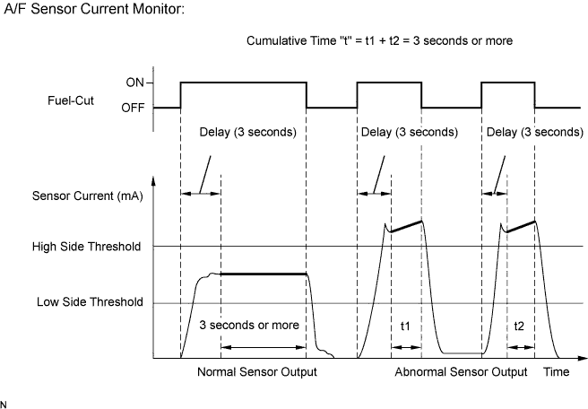
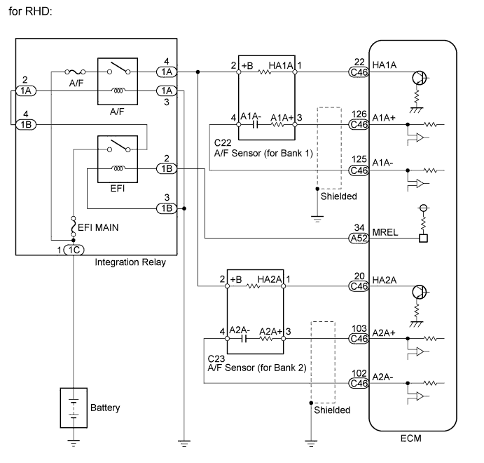
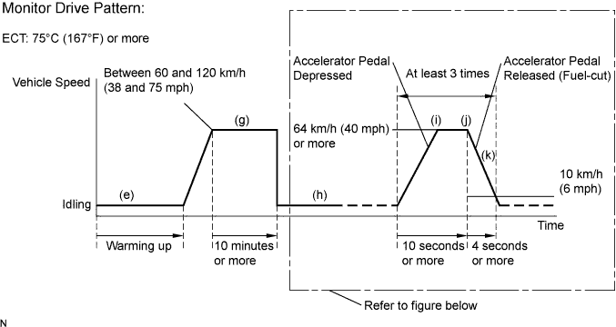
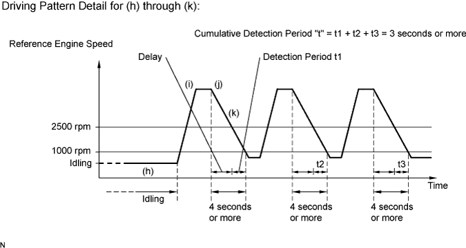
| Tester Display (Sensor) | Injection Volume | Status | Voltage |
| AFS B1 S1 (A/F) | +25% | Rich | Below 3.0 |
| -12.5% | Lean | Higher than 3.35 | |
| O2S B1 S2 (HO2) | +25% | Rich | Higher than 0.55 |
| -12.5% | Lean | Below 0.4 | |
| AFS B2 S1 (A/F) | +25% | Rich | Below 3.0 |
| -12.5% | Lean | Higher than 3.35 | |
| O2S B2 S2 (HO2) | +25% | Rich | Higher than 0.55 |
| -12.5% | Lean | Below 0.4 |
| Case | A/F Sensor (Sensor 1) Output Voltage | HO2 Sensor (Sensor 2) Output Voltage | Main Suspected Trouble Area |
| 1 | 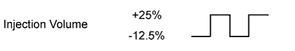 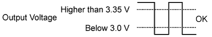 | 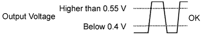 | - |
| 2 | 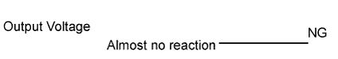 |
| |
| 3 |
| ||
| 4 |
|
| 1.CHECK ANY OTHER DTCS OUTPUT (IN ADDITION TO P2195, P2196, P2197 OR P2198) |
Connect the intelligent tester to the DLC3.
Turn the engine switch on (IG).
Turn the tester on.
Enter the following menus: Powertrain / Engine and ECT / DTC.
Read DTCs.
| Result | Proceed to |
| P2195, P2196, P2197 or P2198 is output | A |
| P2195, P2196, P2197 or P2198 and other DTCs are output | B |
|
| ||||
| A | |
| 2.READ VALUE USING INTELLIGENT TESTER (TEST VALUE OF A/F SENSOR) |
Connect the intelligent tester to the DLC3.
Turn the engine switch on (IG) and turn the tester on.
Clear DTCs (Click here).
Start the engine.
Allow the vehicle to drive in accordance with the drive pattern described in the Confirmation Driving Pattern.
Enter the following menus: Powertrain / Engine and ECT / Data List / Monitor Status.
Check that the status of O2S (A/FS) Monitor is Complete.
If the status is still Incomplete, drive the vehicle according to the driving pattern again.
Enter the following menus: Powertrain / Engine and ECT / Data List / A/F Control System / AFS B1 S1 or AFS B2 S1.
Check the test value of the A/F sensor output current during fuel-cut.
| Test Value | Proceed to |
| Within normal range (1.4 mA or higher, and below 3.6 mA) | A |
| Outside normal range (Below 1.4 mA, or 3.6 mA or higher) | B |
|
| ||||
| A | |
| 3.READ VALUE USING INTELLIGENT TESTER (OUTPUT VOLTAGE OF A/F SENSOR) |
Connect the intelligent tester to the DLC3.
Start the engine.
Turn the tester on.
Warm up the A/F sensor at an engine speed of 2500 rpm for 90 seconds.
Enter the following menus: Powertrain / Engine and ECT / Data List / A/F Control System / Snapshot / AFS B1 S1 or AFS B2 S1 and Engine Speed.
Check the A/F sensor voltage 3 times, when the engine is in each of the following conditions:
While idling (check for at least 30 seconds).
At an engine speed of approximately 2500 rpm (without any sudden changes in engine speed).
Raise the engine speed to 4000 rpm and then quickly release the accelerator pedal so that the throttle valve is fully closed.
| Condition | A/F Sensor Voltage Variation | Reference |
| (1) and (2) | Remains at approximately 3.3 V | 3.1 V to 3.5 V |
| (3) | Increases to 3.8 V or higher | This occurs during engine deceleration (when fuel-cut performed) |
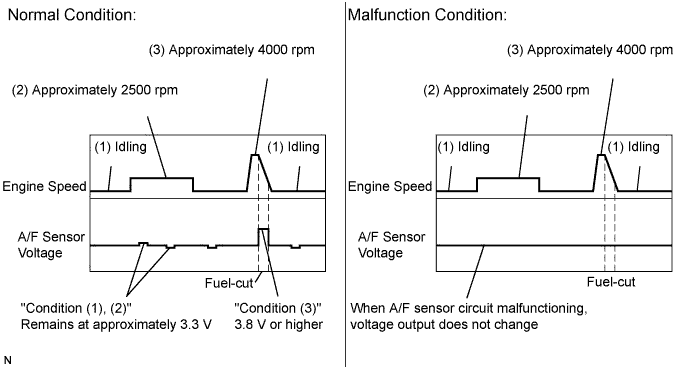
|
| ||||
| OK | |
| 4.PERFORM CONFIRMATION DRIVING PATTERN |
| NEXT | |
| 5.CHECK WHETHER DTC OUTPUT RECURS (DTC P2195, P2196, P2197 OR P2198) |
Enter the following menus: Powertrain / Engine and ECT / DTC / Pending.
Read pending DTCs.
| Result | Proceed to |
| P2195, P2196, P2197 or P2198 is output | A |
| No DTC is output | B |
|
| ||||
| A | |
| 6.REPLACE AIR FUEL RATIO SENSOR |
Replace the air fuel ratio sensor (Click here).
| NEXT | |
| 7.PERFORM CONFIRMATION DRIVING PATTERN |
| NEXT | |
| 8.CHECK WHETHER DTC OUTPUT RECURS (DTC P2195, P2196, P2197 OR P2198) |
Enter the following menus: Powertrain / Engine and ECT / DTC / Pending.
Read pending DTCs.
| Result | Proceed to |
| No DTC is output | A |
| P2195, P2196, P2197 or P2198 is output | B |
|
| ||||
| A | ||
| ||
| 9.INSPECT AIR FUEL RATIO SENSOR (HEATER RESISTANCE) |
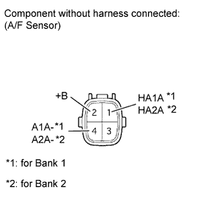 |
Disconnect the Air-Fuel Ratio (A/F) sensor connector.
Measure the resistance according to the value(s) in the table below.
| Tester Connection | Condition | Specified Condition |
| 1 (HA1A) - 2 (+B) | 20°C (68°F) | 1.8 to 3.4 Ω |
| 1 (HA1A) - 4 (A1A-) | Always | 10 kΩ or higher |
| 1 (HA2A) - 2 (+B) | 20°C (68°F) | 1.8 to 3.4 Ω |
| 1 (HA2A) - 4 (A2A-) | Always | 10 kΩ or higher |
|
| ||||
| OK | |
| 10.INSPECT INTEGRATION RELAY (A/F) |
 |
Remove the integration relay from the engine room relay block.
Inspect the A/F fuse.
Remove the A/F fuse from the integration relay.
Measure the resistance according to the value(s) in the table below.
| Tester Connection | Condition | Specified Condition |
| A/F fuse | Always | Below 1 Ω |
Reinstall the A/F fuse.
Inspect the integration relay (A/F).
Measure the resistance according to the value(s) in the table below.
| Tester Connection | Condition | Specified Condition |
| 1C-1 - 1A-4 | Battery voltage not applied to terminals 1A-2 and 1A-3 | 10 kΩ or higher |
| Battery voltage applied to terminals 1A-2 and 1A-3 | Below 1 Ω |
|
| ||||
| OK | |
| 11.CHECK HARNESS AND CONNECTOR (A/F SENSOR - ECM) |
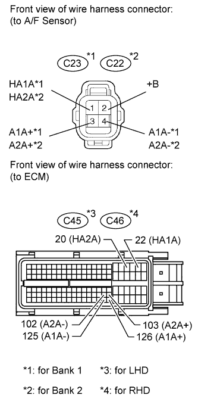 |
Disconnect the A/F sensor connector.
Measure the voltage according to the value(s) in the table below.
| Tester Connection | Switch Condition | Specified Condition |
| C22-2 (+B) - Body ground | Engine switch on (IG) | 11 to 14 V |
| C23-2 (+B) - Body ground | Engine switch on (IG) | 11 to 14 V |
Turn the engine switch off.
Disconnect the ECM connector.
Measure the resistance according to the value(s) in the table below.
| Tester Connection | Condition | Specified Condition |
| C22-1 (HA1A) - C45-22 (HA1A) | Always | Below 1 Ω |
| C22-3 (A1A+) - C45-126 (A1A+) | Always | Below 1 Ω |
| C22-4 (A1A-) - C45-125 (A1A-) | Always | Below 1 Ω |
| C23-1 (HA2A) - C45-20 (HA2A) | Always | Below 1 Ω |
| C23-3 (A2A+) - C45-103 (A2A+) | Always | Below 1 Ω |
| C23-4 (A2A-) - C45-102 (A2A-) | Always | Below 1 Ω |
| C22-1 (HA1A) or C45-22 (HA1A) - Body ground | Always | 10 kΩ or higher |
| C22-3 (A1A+) or C45-126 (A1A+) - Body ground | Always | 10 kΩ or higher |
| C22-4 (A1A-) or C45-125 (A1A-) - Body ground | Always | 10 kΩ or higher |
| C23-1 (HA2A) or C45-20 (HA2A) - Body ground | Always | 10 kΩ or higher |
| C23-3 (A2A+) or C45-103 (A2A+) - Body ground | Always | 10 kΩ or higher |
| C23-4 (A2A-) or C45-102 (A2A-) - Body ground | Always | 10 kΩ or higher |
| Tester Connection | Condition | Specified Condition |
| C22-1 (HA1A) - C46-22 (HA1A) | Always | Below 1 Ω |
| C22-3 (A1A+) - C46-126 (A1A+) | Always | Below 1 Ω |
| C22-4 (A1A-) - C46-125 (A1A-) | Always | Below 1 Ω |
| C23-1 (HA2A) - C46-20 (HA2A) | Always | Below 1 Ω |
| C23-3 (A2A+) - C46-103 (A2A+) | Always | Below 1 Ω |
| C23-4 (A2A-) - C46-102 (A2A-) | Always | Below 1 Ω |
| C22-1 (HA1A) or C46-22 (HA1A) - Body ground | Always | 10 kΩ or higher |
| C22-3 (A1A+) or C46-126 (A1A+) - Body ground | Always | 10 kΩ or higher |
| C22-4 (A1A-) or C46-125 (A1A-) - Body ground | Always | 10 kΩ or higher |
| C23-1 (HA2A) or C46-20 (HA2A) - Body ground | Always | 10 kΩ or higher |
| C23-3 (A2A+) or C46-103 (A2A+) - Body ground | Always | 10 kΩ or higher |
| C23-4 (A2A-) or C46-102 (A2A-) - Body ground | Always | 10 kΩ or higher |
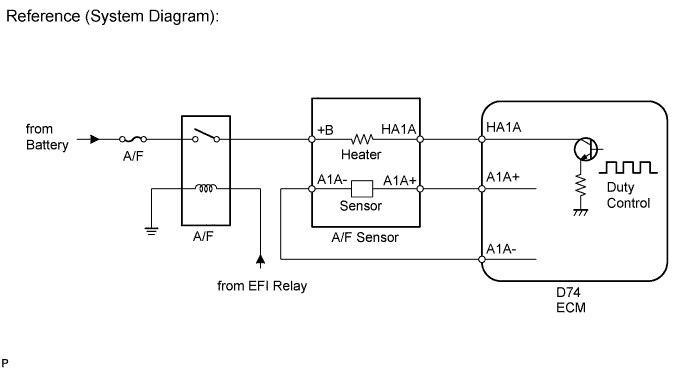
|
| ||||
| OK | |
| 12.REPLACE AIR FUEL RATIO SENSOR |
Replace the air fuel ratio sensor (Click here).
| NEXT | |
| 13.PERFORM CONFIRMATION DRIVING PATTERN |
| NEXT | |
| 14.CHECK WHETHER DTC OUTPUT RECURS (DTC P2195, P2196, P2197 OR P2198) |
Enter the following menus: Powertrain / Engine and ECT / DTC / Pending.
Read pending DTCs.
| Result | Proceed to |
| No DTC is output | A |
| P2195, P2196, P2197 or P2198 is output | B |
|
| ||||
| A | ||
| ||